Arquitetura de aplicações .NET
.NET Core
O .NET Core é uma plataforma de desenvolvimento modular, open-source, para múltiplos sistemas operacionais e fundamentada na linguagem C#. Você começa um projeto com apenas as bibliotecas mais básicas do runtime e vai adicionando mais módulos conforme a necessidade. Através de um sistema de gerenciamento de dependências (NuGet), em qualquer máquina que seu sistema for rodar, as bibliotecas serão baixadas automaticamente pela Internet, permitindo inclusive múltiplas configurações diferentes em cada máquina uma vez que são independentes. Quando você implanta um aplicativo com .NET core, o site contém uma cópia da máquina virtual e uma cópia de cada biblioteca necessária.
Como padrão para o desenvolvimento de aplicações corporativas será utilizado o .NET 6, por se tratar de uma versão LTS (suporte de longo prazo) com suporte de 3 anos.
O .NET 6 se destaca por propiciar:
-
Desenvolvimento simplificado: começar é fácil. Novos recursos de linguagem no C# 10 reduzem a quantidade de código que você precisa escrever. E os investimentos na pilha da Web e as APIs mínimas facilitam a gravação rápida de microsserviços menores e mais rápidos.
-
Melhor desempenho: o .NET 6 é a estrutura da Web de pilha completa e mais rápida, o que reduz os custos de computação se você estiver executando na nuvem.
-
Maior produtividade : o .NET 6 e o Visual Studio 2022 fornecem recarregamento frequente, novas ferramentas git, edição de código inteligente, ferramentas robustas de diagnóstico e teste e melhor colaboração em equipe.
Arquitetura
A padronização no processo de desenvolvimento traz uma gama de benefícios como, maior produtividade, curva de apendizagem diminuida, menor custo, etc. Como forma de uniformizar o desenvolvimento de soluções desenvolvidas com .NET (sejam elas microsserviços ou BFF), foi definido um conjunto mínimo diretrizes para o desenvolvimento.
Visão Geral de Implantação

Web API e Minimal API
O .NET Core 6 possibilita que projetos de API sejam criados utilizando dois templates de desenvolvimento distintos, Web API e Minimal API.
Web API
Quando usar Web API
Web API deve ser utilizada para o desenvolvimento de soluções complexas e com disponibilização de recursos heterogêneos como nos casos de backends de aplicações SPA ou Mobile, onde ao contrário de um microsserviço o foco não é em um domínio específico, mas em um conjunto de domínios sejam eles relacionados ou não.
Minimal API
A simplificação da escrita de códigos e a adoção de padrões tem se tornado mais presente no processo de desenvolvimento.
Diante disto, .NET 6, disponibilizou o recurso de Minimal APIs para permitir a criação de APIs REST que utilizem um número reduzido de recursos. Com uma sintaxe enxuta esse recurso é direcionado para a implementação de microsserviços e aplicativos cloud que consumam o mínimo de dependências do .NET Core.
Como principais vantagens das Minimals APIs se destacam:
- Baixa complexidade do código, reduzindo assim a curva de aprendizado e se tornando mais simples para novos desenvolvedores da plataforma.
- Redução de recursos não essenciais (controllers, roteamento, filtros, etc) que estão presentes nos projetos Web API;
- Adesão ao conceito de minimalismo de código já utilizado amplamente em outras tecnologias como GO, Python e Node.js que permitem a criação de APIs com o mínimo de código e dependências.
- Foco na escalábilidade, garantido que a aplicação possa crescer se necessário, mantendo a baixa complexidade de código;
Quando usar Minimal API
Minimal API deve ser utilizada para os cenários de desenvolvimento de microsserviços, onde a base de código tende a ser pequena, concisa e projetada com funcionalidades e especificidades de um domínio específico de negócio.
Open API (Swagger)
Swagger (OpenAPI) é uma especificação independente de linguagem para descrever APIs REST. Ele permite que computadores e humanos entendam os recursos de uma API REST sem necessidade de acesso ao código-fonte.
O .NET Core possui duas principais implementações OpenAPI para .NET são Swashbuckle e NSwag
O Swashbuckle é a implementação mais utilizada no mercado, sendo a implementação padrão do CLI do .NET Core, dessa forma ela é a implementação recomendada para uso no desenvolvimento de API's na Caixa.
Nos projetos criados através do CLI, o dependência do Swashbuckle já está instalada, caso seja necessário realizar a instalação manualmente, o seguinte comando deve ser executado:
dotnet add [nome_projeto].csproj package Swashbuckle.AspNetCore -v [versao_desejada]
builder.Services.AddEndpointsApiExplorer();
builder.Services.AddSwaggerGen();
Por padrão o CLI já adiciona o middleware Swagger somente no ambiente de desenvolvimento, isso é uma boa prática para não expor a documentação a público não autorizado em produção.
if (app.Environment.IsDevelopment())
{
app.UseSwagger();
app.UseSwaggerUI();
}
Essa é toda a configuração necessária para ter o swagger na aplicação. Sua interface pode ser acessada no endereço https://localhost:<port>/swagger que estará disponível após a inicialização da aplicação.
Acesso a dados (Persistência)
Entity Framework
O Entity Framework Core é um mapeador objeto-relacional (ORM) que permite trabalhar com um banco de dados usando objetos .NET. Ele elimina a necessidade da maior parte do código de acesso a dados que os desenvolvedores normalmente precisam escrever. O EF Core suporta muitos mecanismos de banco de dados.
Com o Entity Framework Core, o acesso a dados é executado usando um modelo. Um modelo é composto de classes de entidade e um contexto derivado que representa uma sessão com o banco de dados, permitindo que você pesquise e salve dados.
Para instalar o Entity Framework deve-se executar o comando:
dotnet add package Microsoft.EntityFrameworkCore
Para cada mecanismo de banco de dados que desejamos utilizar com o Entity Framework, deve instalar um módulo específico do banco de dados em questão.
Abaixo temos um exemplo de instalação do pacote Entity Framework Core para o SqlServer
dotnet add package Microsoft.EntityFrameworkCore.SqlServer
O Entity Framework Core trabalha com um conceito chamado Data Context ou contexto de dados, que é a representação do banco de dados transportado para nossos objetos.
Em suma o Data Context é apenas uma class que concentra quais tabelas do banco queremos mapear para nossos objetos.
public class AppDbContext : DbContext
{
public AppDbContext(DbOptions options) : base(options) { }
public DbSet<Usuario> Usuarios { get; set; }
}
builder.Services..AddDbContext<MyDbContext>()
.UseSqlServer("CONNECTION_STRING");
O Entity Framework Core trabalha com um padrão chamado Unit of Work. Esse padrão define que enquanto não for feita uma chamada ao método SaveChanges() nada é persistido no banco.
Dapper
Muitas vezes as aplicações não necessitam de um framework ORM como o Entity Framework Core para realizar a persistência e o acesso aos dados de sua aplicação. As vezes usar um ORM pode até impactar o desempenho das suas consultas e neste caso o caminho seria partir para otimização quando possível ou usar outros recursos, nesse cenário entra em cena o Dapper.
O Dapper é micro ORM com um foco no desempenho das consultas e na simplicidade de sua utilização. Ele não possui todas os recursos de um ORM completo mas permite usar métodos de extensão que simplifica a criação de consultas.
O Dapper deve é instalado com o seguinte comando:
dotnet add package Dapper
O Dapper exige um SqlConnection porém consegue reduzir muito o código adicionando extensões a ele.
using (var connection = new SqlConnection(connectionString))
{
var query = "SELECT [nome], [idade] FROM [Usuario]";
var usuarios = connection.Query<Usuario>(query);
}
O Dapper adiciona a extensão Query
Segurança (Autenticação e Autorização)
O processo de validação offline de tokens JWT no .NET é provido pelo biblioteca do ASP.NET JwtBearer.
Para realizar sua instalação, o comando abaixo deve ser executado:
dotnet add package Microsoft.AspNetCore.Authentication
dotnet add package Microsoft.AspNetCore.Authentication.JwtBearer
A classe Program.cs deve ser alterada para contemplar a configuração do serviço de validação do token e habilitar a autenticação e autorização.
var key = Encoding.ASCII.GetBytes(Settings.Secret);
builder.Services.AddAuthentication(x =>
{
x.DefaultAuthenticateScheme = JwtBearerDefaults.AuthenticationScheme;
x.DefaultChallengeScheme = JwtBearerDefaults.AuthenticationScheme;
})
.AddJwtBearer(x =>
{
x.RequireHttpsMetadata = false;
x.SaveToken = true;
x.TokenValidationParameters = new TokenValidationParameters
{
ValidateIssuerSigningKey = true,
IssuerSigningKey = new SymmetricSecurityKey(key),
ValidateIssuer = false,
ValidateAudience = false
};
app.UseAuthentication();
app.UseAuthorization();
Com as configurações efetuadas, os controllers devem ser configurados para validar o token enviado no header da requisição.
[ApiController]
[Route("[controller]")]
public class HomeController : ControllerBase
{
[HttpGet(Name = "Anonymous")]
[AllowAnonymous]
public string Anonymous() => "Anônimo";
[HttpGet(Name = "authenticated")]
[Authorize]
public string Authenticated() => "Autenticado");
}
Logs e Monitoramento
O log é uma parte importante do ciclo de vida de uma aplicaçãoo. Ter um bom registro de logs torna-se um recurso-chave que ajuda desenvolvedores, e equipes de suporte a entender e resolver prblemas que aparecem.
Cada mensagem de log tem um nível de log associado. O nível de log ajuda a entender a gravidade e a urgência da mensagem.
Embora o .NET forneça um sistema de registro extensível, as bibliotecas de registro de terceiros podem simplificar significativamente o processo de registro e o uso de práticas avançadas.
Serilog
Serilog é uma biblioteca de registro fácil de configurar para .NET com uma API clara. É útil nas pequenas aplicações mais simples, bem como nas grandes e complexas. Devido às suas ricas habilidades de configuração, você pode usá-lo em todos os seus projetos.
Por ser uma biblioteca bastante utilizada na comunidade desde pequenos projetos até grandes aplicações, o Serilog deve ser o biblioteca de uso preferencial para o desenvolvimento de API's corporativas.
A instalaçao do Serilog é atráves do comando:
dotnet add package Serilog
Abaixo o código para a instalação do Sink que escreve no console.
dotnet add package Serilog.Sinks.Console
A configuração do Serilog deve ser feita no program.cs
builder.Host.UseSerilog((ctx, lc) => lc
.WriteTo.Console(LogEventLevel.Debug)
Escrevendo Logs
Para escrever logs nas classes, é necessário apenas injetar a interface ILogger. A partir disso a escrita se dá através das chamadas dos métodos da interface. Utilizando o Serilog, os logs são escritos pelo Sink configurado na aplicação.
public class ClasseComLog
{
private readonly ILogger _logger;
public ClasseComLog(ILogger<ClasseComLog> logger)
{
_logger = logger;
}
public void logar()
{
_logger.LogError("Mensagem de erro");
_logger.LogInformation("Mensagem de informação");
_logger.LogDebug("Mensagem de Debug");
_logger.LogWarning("Mensagem de Warning");
}
}
Validações
A validação de dados e objetos é de suma importancia pois permite fazer uma verificação quanto a erros que podem estar presentes e causar inconsistência nas informações gerando vários tipos de prejuizos para a organização.
Para realizar validação nas API's corporativas é recomendado a utilização da biblioteca Flunt.
O Flunt é uma forma de implementar um padrão de validações e notificações de forma a concentrar erros em determinadas ações e entidades.
A instalação do Flunt deve ser feita pelo comando:
dotnet add package Flunt --version 2.0.0
Para habilitar o uso do flunt para as validações, a classe que será alvo da validação deve extender a classe Notifiable com a tipagem do tipo Notification.
public class Tarefa : Notifiable<Notification>
{
// codigo
}
public class TarefaContract : Contract<Tarefa>
{
public CreateEmailContract(Tarefa tarefa)
{
Requires()
.IsNullOrEmpty(tarefa.descricao, "Tarefa");
}
}
Com o contrato criado, a classe alvo de validação pode se aproveitar do método IsValid da classe Notifiable para verificar se o contrato definido foi cumprido ou se encontra em desconformidade.
var tarefa = new Tarefa("");
if (!tarefa.IsValid()){
// codigo de tratamento de exceção
}
Boas práticas
Implicit Using
Implicit Using é um recurso que faz com que o compilador adicione automaticamente using de forma global aos projetos para namespaces comuns usados em vários locais. Esse recurso permite que as classes fiquem menos poluidas com informações sem valor para o desenvolvedor, além de trazer mais um ganh de produtividade.
Por padrão, os projetos criados através do CLI do .NET possuem o recurso habilitado, e todas os namespaces de base do .NET como System e System.Linq são importados automaticamente sem precisar declará-los explicitamente nas classes.
Para criar 'Implicit Using' customizados do projeto:
-
No arquivo
[nome_do_projeto].csproj, o elemento<ImplicitUsings>filho de<PropertyGroup>deve possuir o valorenable<PropertyGroup> <ImplicitUsings>enable</ImplicitUsings> </PropertyGroup> -
Deve ser adicionado um novo elemento
<ItemGroup>contendo um elemento **<Using>** para cada namespace que deva ser registrado para uso implícito.<ItemGroup> <Using Include="Flunt.Notification" /> <Using Include="Microsoft.AspNetCore.Mvc" /> </ItemGroup>
Dessa forma todas as declarações using que façam referência aos namespaces declarados podem ser retiradas das classes, pois as mesmas serão adicionadas em tempo de compilação.
É possível verificar quais usos implícitos estão sendo gerados para o projeto navegando até o diretório obj/debug/net6.0 e localizando o arquivo gerado chamado: [nome_do_projeto].GlobalUsings.g.cs.
É recomendado que esse recurso seja utilizado sempre que possível.
Records
A imutabilidade de objetos é um recurso extremamente poderos do desenvolvimento. Ela torna objetos thread-safe, melhora o gerenciamento de memória, deixa o código mais legível e facilita a manutenção.
Esse recurso é bastante desejável no uso de multithreading, mas se falando de APIs, ele pode muito útil para a construção de objetos que possuem como único propósito a transferência de dados, os famosos DTO's ou VO's.
No C# 9 foi incluído um novo tipo de dado chamado Record, que fornece exatamente essa imutabilidade, sendo assim, esse tipo se encontra dispoível para uso no .NET Core 6.
Um exemplo de definição do tipo Record se encontra abaixo:
public readonly record Temperatura(double maxima, double minima);
Sua utilização segue o mesmo padrão das classes convencionais do C#, sendo invocado através de um construtor, porém sendo após sua construção imutável.
var temp = new Temperatura(36.2, -5.3);
É recomendado que o Record seja utilizado em detrimento de classes e structs quando o objetivo for apenas realizar transferência de dados, por exemplo em DTO's com a representação de entidades de banco que são devolvidos pelas APIs em um endpoint de consulta.
Filter Error
Por padrão quando uma excecão não tratada ocorre na aplicação, o .NET Core devolve ao cliente uma resposta contendo toda a stack do erro. Esse comportamento é bastante indesejado, pois, além de ser bastante incômodo para o cliente da API receber informações sem nenhum valor negocial, pode revelar problemas e vulnerabilidades da API.
Para tratar esse compartamento, o .NET fornece a possibilidade de criação de alguns mecanismos de Exception Handler, sendo um dos mais simples de desenvolver, o Filter Error é o padrão indicado para uso nas API's.
O Filter Error consiste em utilizar um endpoint especifico de erro que é chamado internamente pelo .NET quando uma exceção não tratada é identificada.
Abaixo é demonstrada a forma de declaração do Filter Error, o código deve ser colocado na classe Program.cs antes da chamada de app.run();
app.UseExceptionHandler("/error");
app.map("/error", (HttpContext context) =>{
// trata o erro
Results.Problem(title:"", statusCode: 500);
});
AsNoTracking
Quando o Entity Framework é utilizado, ao criar um contexto e declarar as classes do mapeamento, todos os objetos da classe mapeada são rastreados e gerenciados pelo contexto, ou seja, o simples fato fazer uma consulta a partir do contexto, coloca os objeto resultantes sobre o controle do EF e qualquer mudança realizada neles é enviada para o banco de dados.
Esse comportamento é na maioria dos casos exatamente o que se espera, porém existem cenários onde é desejado apenas obter objetos através do contexto, nesse caso qualquer mudança acidental feita no objeto pode gerar um efeito colateral na aplicação.
Para esses casos, o Entity Framework fornece a funcionalidade AsNoTracking, ela basicamente informa ao contexto que os dados retornados de uma consulta não devem ter suas mudanças rastreadas. A retirada dos objetos do controle do contexto além de previnir alteração acidentais, aumentará a performance das consultas.
Dessa forma a recomendação é que sempre que forem feitas consultas onde espera-se que os valores resultantes não sejam alterados, como por exemplo consultas feitas de dentro de um contexto negocial de uma tela de pesquisa, onde os dados do banco são retornados apenas para preencherem DTO's, AsNoTracking deve ser utilizado.
Abaixo é mostrado um exemplo de uso do AsNoTracking
context.Entidade.AsNoTracking().Where(e => e.id = 1);
Extensions Methods
Extensions Methods é um recurso que permite que sejam adicionados comportamentos(métodos) a classes existentes sem a necessidade de criar uma nova classes através de extensão. Os métodos de extensão são métodos estáticos, mas são chamados como se fossem métodos de instância na classe alvo.
A estrutura de um método de extensão é definida da seguinte forma:
- Deve ser definido em uma classe estática.
- Deve ser definido como estático.
- O primeiro parâmetro deve ser prefixado com a palavra-chave
this - Deve incluir pelo menos um argumento com o qual deve ser idêntico ao tipo da classe que será estendida
- Pode retornar ou não um valor.
- É necessário importar o namespace no qual o método de extensão é definido.
- Pode sobrecarregar os métodos existentes.
- Aceita tipos genéricos.
Os métodos de extensão possuem as seguintes restrições:
- Não podem sobrescrever propriedades;
- Não podem ser usados para sobrescrecer métodos existentes.
public static string inverte(this string valor)
{
if (string.IsNullOrEmpty(valor)) return "";
return new string(valor.ToCharArray().Reverse().ToArray());
}
Sempre antes de gerar um novo tipo por extensão é recomendado que seja analisado se o cenário não permite o uso de Extensions Methods, e caso permita eles devem ser sempre a primeira escolha.
Histórico da Revisão
| Data | Versão | Descrição | Autor |
|---|---|---|---|
| 28/11/2022 | 1.0 | Criação do documento | SUART02 |